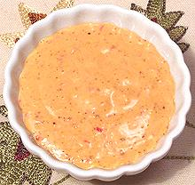

 |
Rouille (Rust)France, Provence - Rouille | ||||
| Makes: Effort: Sched: DoAhead: |
1 cup ** 20 min Yes |
This popular sauce is served with raw vegetables, steamed or boiled potatoes, or spread on toast before fish soup is ladled over. There are endless recipes for this sauce, but the ones here are typical, and work. | |||
|
3 4 1/3 2 1/2 1 1/2 tt |
cl c t t c |
Red Chili (1) Garlic Bread, crumbled Tomato Paste Salt Egg Yolk (4) Olive Oil Chili Powder |
#1 Marseille Style
|
|
3 4 1/3 2 1/2 1/2 tt |
cl c t t c |
Red Chili (1) Garlic Bread, crumbled Tomato Paste Salt Mayonnaise (3) Chili Powder |
#2 Stable VersionThis version will keep longer because it has no raw egg yolk. In an emergency it could also be made with just chili powder, but fresh garlic is not optional.
|